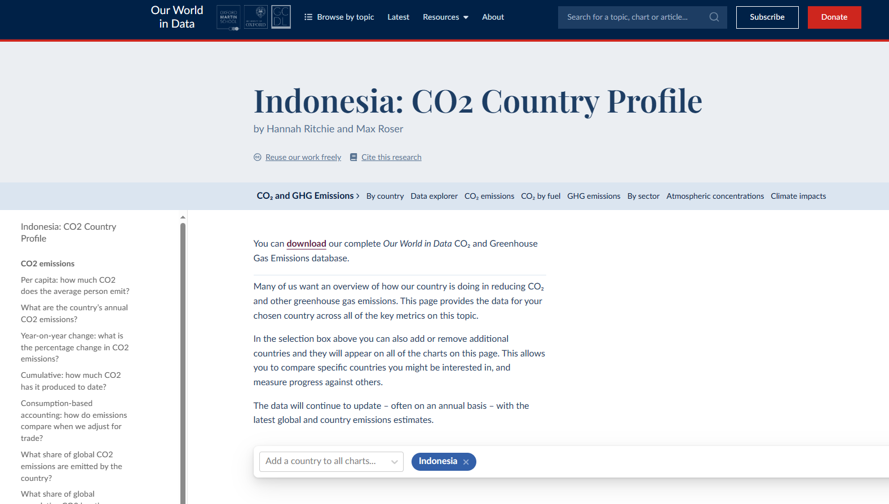

Indonesia's CO2 Emission Data
Keywords: Carbon (CO2) Emission
Tools Used: Microsoft PowerBI, Google Sheets/Microsoft Excel, Google Slides (for presentation)
This project was a component of Sprint 1 during the Data Analytics Bootcamp for Eskwelabs, Cohort 12. It was crafted collaboratively within the group.
Introduction

Carbon dioxide (CO2) emissions are the release of carbon dioxide into the atmosphere, mostly from human activities such as the burning of fossil fuels (coal, oil and natural gas), industrial production and deforestation. Carbon dioxide is a greenhouse gas and its accumulation in the atmosphere creates a greenhouse effect, causing global warming and climate change.

Indonesia, located in Southeast Asia and the largest country in the world with more than 17,000 islands and a population of more than 270 million, is the fourth largest country in the world. Its capital, Jakarta, is the center of trade. Known for its rainforests and rich biodiversity, including iconic species such as the Sumatran orangutan, Indonesia has a thriving economy based on agriculture, natural resources and trade, making it an important part of the regional economy. Despite challenges in environmental protection, infrastructure development and social inequality, Indonesia is committed to preserving its cultural and social heritage.
The data used for this analysis comes from Our World in Data CO2 and Greenhouse Gas Emissions database, accessible here. The aim of our research is to analyze Indonesia's carbon dioxide emissions from 1990 to this year.
Methods Used
Data Collection
The research began by gathering comprehensive data from Our World in Data - CO2 Emissions, with a specific focus on incorporating information related to Indonesia. This dataset served as the primary basis for our study, and we bolstered its reliability by supplementing it with data from other reputable sources. 
Data Cleaning
A thorough data cleaning process was conducted to identify and rectify errors. This involved a meticulous examination of the dataset to detect inconsistencies, inaccuracies, and missing values, particularly in Indonesia's CO2 emissions data. Any identified errors underwent careful validation and correction procedures to ensure the accuracy and integrity of the data used for subsequent analysis.
Data Analysis
The cleaned dataset, which included Indonesia's CO2 emissions data, underwent a comprehensive analysis using statistical methods, trend analysis, and other relevant techniques. This analysis aimed to extract meaningful insights into the trends, patterns, and relationships within the CO2 emissions data over specific time periods.
Observation
The outcomes of the data analysis, with a focus on Indonesia, were systematically observed and documented. This involved a thorough examination of results obtained from various analytical techniques. Patterns, anomalies, and significant trends specific to Indonesia were identified and documented to provide a clear and insightful overview of key findings emerging from the CO2 emissions data.
Results and Discussion
The identified patterns and trends, particularly those related to Indonesia, were presented in the results section, providing a detailed account of the study's findings. The discussion phase involved a deep interpretation of these results, linking them to existing literature and theoretical frameworks. Unexpected findings, especially those related to Indonesia, were explored, and their implications were carefully considered.
Conclusion
- Indonesia has the highest carbon emissions among its Southeast Asian neighboring countries.
- The main driver of carbon emissions in Indonesia is its population.
- Carbon emissions, specifically from coal CO2, have had the most substantial impact from 1990 to the present.
- Indonesia needs to shift to renewable energy sources and undertake decarbonization efforts in existing industries, particularly those related to coal.
Recommendation
Based on the results and discussions, conclusive recommendations were formulated, specifically addressing patterns and trends in CO2 emissions with a focus on Indonesia. These recommendations aimed to tackle potential challenges, promote sustainable practices, and guide future research and policy initiatives. Furthermore, insights from the study, especially those related to Indonesia, were utilized to develop actionable strategies aimed at mitigating the impact of carbon emissions on the environment.

In summary, the methodology involved a systematic and rigorous process of data collection, cleaning, analysis, observation, and interpretation, with a specific emphasis on Indonesia. This approach ensures the reliability and validity of our study, contributing to a broader understanding of CO2 emissions and their implications, particularly within the Indonesian context.